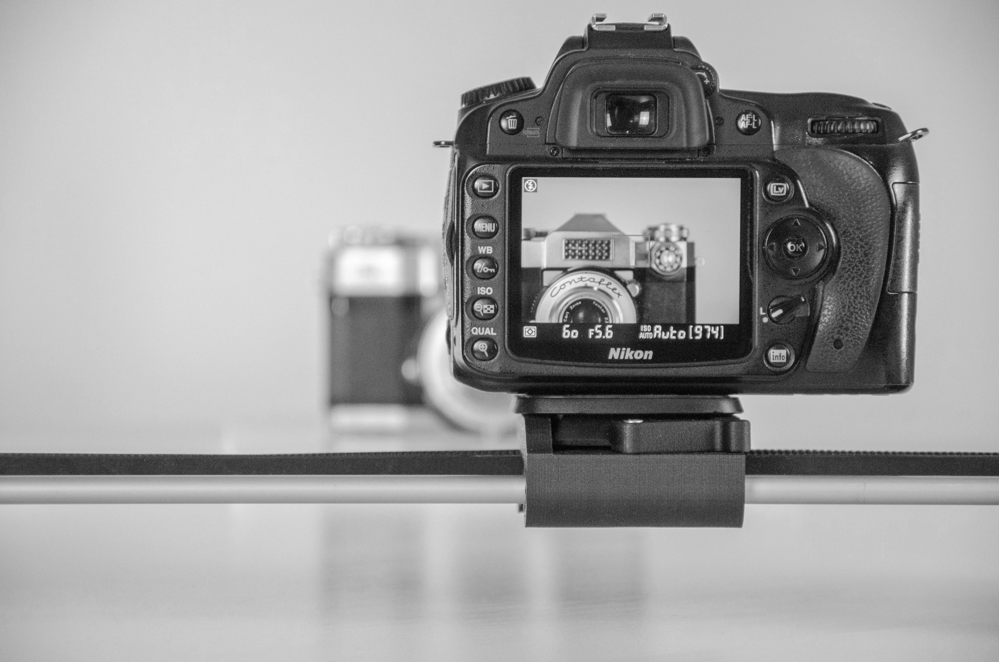
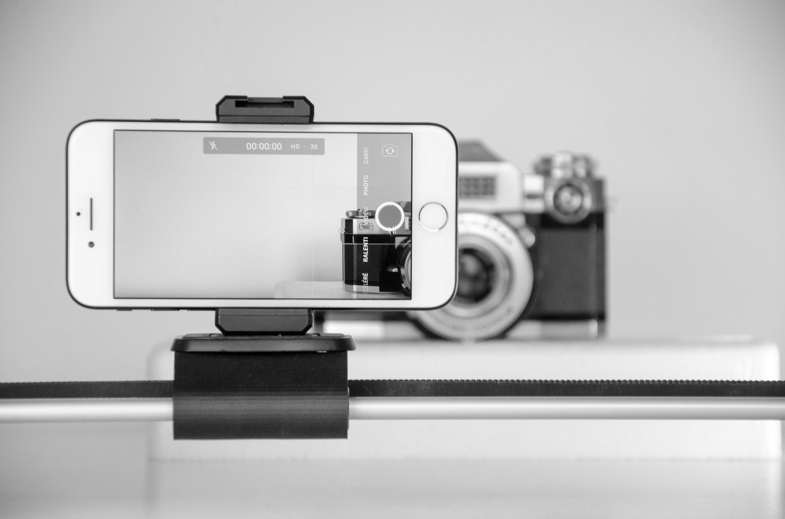

The evolution of the camera reaching its digital camera stage transformed former concepts of photography being a slow/manual process, into a process that's fast, flexible, and efficient. With additionally beneficial features such as instant preview, autofocus, and digital storage being introduced, this reshaped peoples expectations for photography's accuracy. This eventually streamlined image-making and set the baseline for modern visual habits.

With the introduction of smartphones, the combination of cameras with advanced software magnified the power photography could reach by allowing accessibility tools available for everyone to use. Alongside computational imaging (such as HDR, night mode, and AI-enhanced processing), developments of photos compounded with minimal user input. This automation alters public perception further by blending real optics with algorithmic interpretation.
Varying digital platforms ended up turning photography into a fast moving and highly curated visual language. Adding onto this effect, filters, editing software, and rapid means of sharing have significantly influenced how people present themselves and interpret others. In this new dynamic/environment, images have become tools for shaping identity, lifestyle, and collective perception.